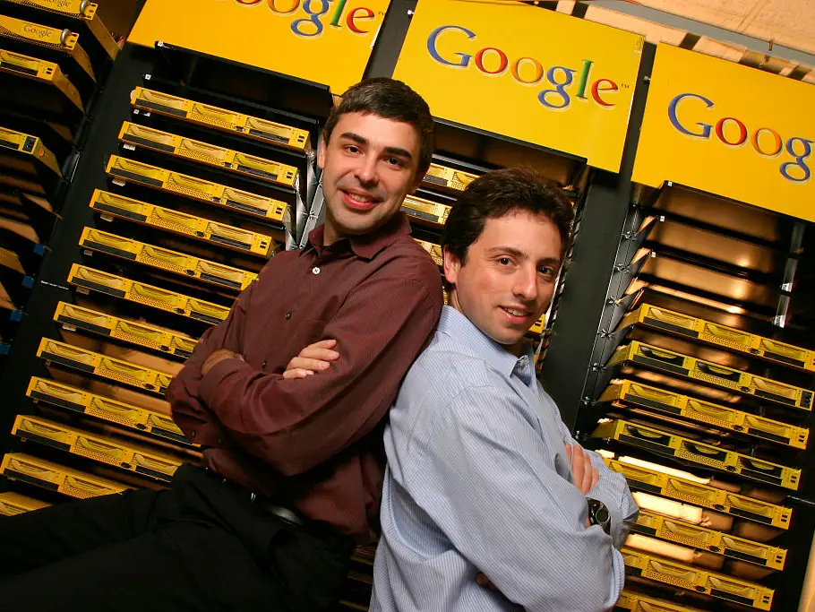

The web
Tim Berners-Lee
Turned the internet into a readable information space of documents, addresses and links that anyone could openly build on.
Read the profileThe internet, the web and searchability
From the protocols that connected networks, to the hypertext that made information linkable, to the search engines that made it possible to find your way around the web.
Show:
Vint Cerf and Bob Kahn describe a model in which separate networks can exchange data without being built the same way.1
On 1 January 1983 ARPANET moves over to TCP/IP, following the transition plan in RFC 801.2, 3
In November 1987 RFC 1034 and RFC 1035 are published, describing the Domain Name System: the naming system that translates host names into IP addresses.4, 5
Tim Berners-Lee sets out the idea of a global hypertext system in which documents can link to each other.6
On 6 August 1991 the web's files are put online and announced in the newsgroup alt.hypertext, according to CERN's own timeline of the project. The software included a web server, a simple browser and a library for developers (CERN, archived page).7, 8
On 30 April 1993 CERN makes the web's software free for anyone to use and build on.9
According to NCSA, Mosaic was the first published browser that automatically displayed images together with text. In December 1993 it was downloaded more than 5,000 times a month.10
Berners-Lee founds the World Wide Web Consortium to develop open web standards.11
Google shows how links, indexing and ranking can make a growing web searchable.12
Sergey Brin and Lawrence Page describe the Google prototype in The Anatomy of a Large-Scale Hypertextual Web Search Engine, a search engine that uses the link structure of hypertext to give better search results.13
The web
Turned the internet into a readable information space of documents, addresses and links that anyone could openly build on.
Read the profile
Internet protocols
Helped shape TCP/IP, the model that let the internet grow as a network of networks.
Read the profile
Searchability
Changed how people find information by turning links, indexes and relevance into everyday navigation.
Read the profileWeb history overview
TCP/IP lets networks talk to each other without everything having to be controlled from a single place.
The World Wide Web makes information linkable through HTML, HTTP and URLs.
Search makes the web's growing mass of information usable in everyday life.
Open rules let many players build further without asking the same owner for permission.
Step by step
Seven steps from the address bar to a finished page. The colour shows which of three layers the step belongs to: protocols, documents or navigation.
1. Documents
The browser splits the address into its parts: scheme (for example https), host name and path. The host name says which computer to contact, the path which resource is requested.
URLs are part of the foundation of the web, see Tim Berners-Lee.
Sources: RFC 3986: URI syntax
2. Protocols
Computers on the internet are reached by IP addresses, not names. The browser therefore looks up the host name in DNS, the internet's naming system, to get its IP address.
DNS builds on the internet's protocols, see Vint Cerf.
Sources: RFC 1034: DNS concepts, RFC 1035: DNS specification
3. Protocols
The browser opens a TCP connection to the IP address with a three-way handshake: SYN, SYN-ACK, ACK. With https a TLS handshake follows, in which the two sides agree on the keys that encrypt the traffic. The newer version HTTP/3 uses QUIC over UDP instead of TCP.
TCP/IP is Vint Cerf's part of the story.
Sources: RFC 9293: TCP, RFC 8446: TLS 1.3, RFC 9114: HTTP/3
4. Documents
Over the connection the browser sends an HTTP request, for example the GET method with the path, and the host name in the Host header field.
HTTP was created for the web, see Tim Berners-Lee.
Sources: RFC 9110: HTTP semantics, MDN: HTTP messages
5. Documents
The server replies with a status code (200 means OK, 404 that the server did not find the resource), header fields such as Content-Type and the content itself, often an HTML document.
The server and the browser use the same open protocol.
Sources: RFC 9110: status codes
6. Documents
The browser parses the HTML code and builds a document tree (DOM). Style sheets, images and scripts that the document points to are fetched with new requests, and the page is drawn.
HTML is the document format of the web, see Tim Berners-Lee.
Sources: W3C: HTML, MDN: How browsers work
7. Navigation
A link points to a new URL. Click it and the process starts again from the first step. Search engines do the same on a large scale: they follow links to find pages, and PageRank used the links to weigh pages against each other.
Following links on a large scale is Google's part of the story.
Sources: MDN: the a element
Reading order
Glossary
References